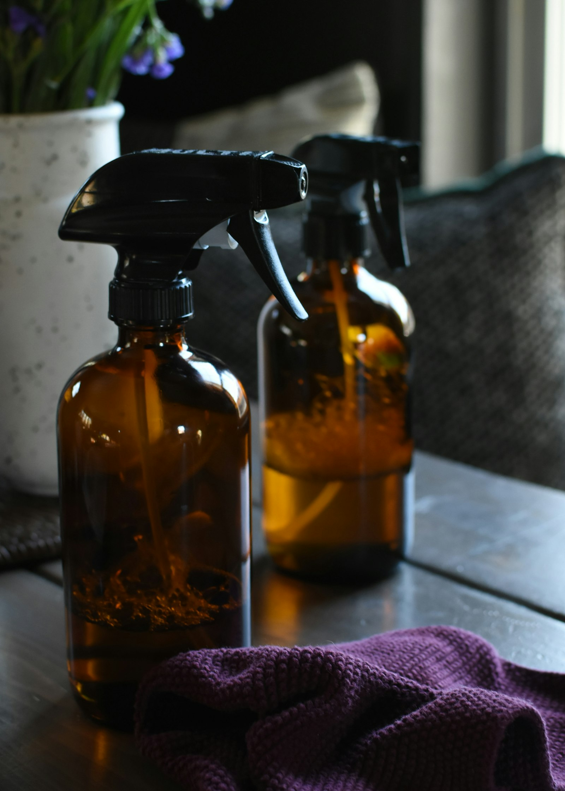
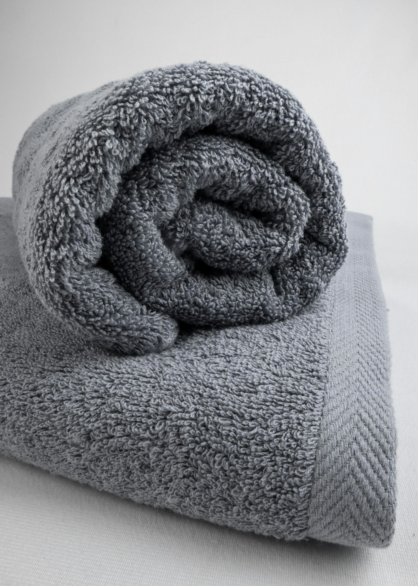

La chimie élémentaire — naturelle, et redoutablement efficace. Un flacon en verre, trois microfibres techniques, une huile essentielle. Tout le reste, ce sont des gestes.
Aujourd'hui, nos intérieurs sont saturés de Composés Organiques Volatils — émis par les produits ménagers industriels. L'air que nous respirons à la maison est devenu, selon l'ADEME, cinq à dix fois plus pollué que celui des centres-villes aux heures de pointe.
Les COV synthétiques (formaldéhyde, benzène, toluène, glycols et consorts) s'accumulent dans les espaces fermés. Ils se respirent, se déposent sur la peau, s'accrochent aux textiles. Ils sont aujourd'hui suspectés dans une longue liste de pathologies courantes :
Allergies respiratoires chroniques et aggravation de l'asthme, en particulier chez l'enfant. Perturbations endocriniennes documentées pour plusieurs molécules de parfumerie. Maux de tête persistants et fatigue inexpliquée les jours suivant le ménage. Irritations cutanées et oculaires au contact direct ou par vapeur résiduelle.
Le constat est aujourd'hui partagé par tous les organismes de santé publique — Anses, OMS, EPA américaine : l'air intérieur est devenu un sujet sanitaire majeur. Et le ménage en est l'une des principales sources.
Face à ce constat, Maurisson revient à l'essentiel. Pas de mousse spectaculaire, pas de parfum de synthèse, pas de promesse marketing. Une chimie élémentaire, des matériaux durables, et des gestes précis. Ce kit n'est pas un accessoire — c'est un système cohérent et durable, pensé pour la performance pure.
Laurus nobilis, l'arbre méditerranéen sacré des couronnes antiques. Son huile essentielle est l'un des actifs les plus polyvalents de l'aromathérapie — et sa volatilité totale en fait le partenaire idéal du vinaigre.
Bactéricide puissant, neutralisant notamment le staphylocoque doré — l'un des contaminants les plus tenaces des cuisines.
Virucide grâce à la richesse en cinéole, déjà documentée sur plusieurs familles de virus enveloppés.
Fongicide empêchant radicalement le développement des moisissures domestiques courantes (joints, contour de fenêtre, intérieur de frigo).
Désodorisant naturel masquant l'acidité du vinaigre par une note fraîche, légèrement camphrée et épicée.
Privilégier une HE bio chémotypée Laurus nobilis CT 1,8-cinéole. La concentration en cinéole conditionne la puissance antiseptique.
Si une surface paraît grasse après usage, c'est qu'on a forcé sur les gouttes. Cinq à huit suffisent pour un flacon de 500 ml. Au-delà, la volatilité ne compense plus la dose, et les principes actifs deviennent simplement… gras.
Trois ingrédients, trois proportions justes, un seuil de bascule à ne pas franchir — sous peine d'abîmer ce qu'on cherche à nettoyer. L'efficacité ne tient qu'à la rigueur du dosage.
L'eau du robinet (surtout en Belgique, dure) contient du calcaire qui se dépose sur les surfaces à mesure que l'eau s'évapore. Une eau filtrée (Brita, déminéralisée, ou de pluie) évite ces traces blanches — invisibles sur le carrelage, mais redoutables sur l'inox et les vitres.
Deux minutes, quatre gestes. L'ordre des opérations compte — l'huile essentielle ne se mélange à l'eau que si la base acide est posée en premier.
30 jours — au-delà, l'HE perd ses propriétés antiseptiques par oxydation. Préparer des petites quantités, renouvelées souvent, plutôt qu'un grand stock. Si l'odeur fraîche du laurier disparaît au profit d'une note rance, c'est qu'il est temps de refaire le mélange.
Trois tissages techniques, trois missions distinctes. Chaque microfibre a sa zone — et les rotations entre elles font la différence entre un nettoyage propre et un nettoyage parfait. Composition standard : 80 % polyester / 20 % polyamide.

Quatre gestes, toujours dans cet ordre. C'est la chorégraphie qui fait la différence entre un nettoyage approximatif — efficace cinq minutes — et un nettoyage de niveau professionnel qui tient une semaine.
Imaginer qu'on dessine la lettre S avec la microfibre, en descendant. Chaque passage couvre une bande de surface propre, et le bord inférieur de la microfibre reste celui en contact avec la zone sale — qu'on replie ensuite à la face suivante (voir page VII).
Une seule microfibre, huit nettoyages frais. C'est le secret des professionnels du nettoyage — et la raison pour laquelle une microfibre Maurisson dure trois fois plus longtemps qu'un torchon mal plié.
Repliée en quatre, la microfibre offre quatre faces visibles sur le dessus et quatre en dessous. Soit huit zones de contact propres avant de devoir laver la fibre — et autant d'occasions de toucher du tissu vierge à un nouvel endroit sale.
Dès qu'une face est saturée (graisse, poussière noircie, traces), on retourne ou on déplie d'un cran pour exposer une face propre. C'est ce qui empêche de promener la saleté sur la surface qu'on est en train de nettoyer — l'erreur n°1 du nettoyage maison, celle qui transforme un torchon en pinceau à crasse.
Pourquoi huit et pas plus ? Au-delà, les plis deviennent trop épais pour suivre le relief des surfaces. Quatre plis = 8 faces = format idéal pour la main, suffisamment épais pour absorber, suffisamment fin pour épouser.
Commencer par les surfaces les plus propres (vitres, miroirs) et terminer par les plus sales (plaque de cuisson, intérieur de poubelle). Une microfibre par grande zone — et toujours passer du propre au sale dans une même face, jamais l'inverse.
Le pliage en huit est l'astuce signature — voici les cinq autres qui distinguent un nettoyage de pro d'un nettoyage de samedi matin. Aucune ne coûte rien : ce sont des gestes, pas des produits.
La formule 30/70 + laurier couvre l'écrasante majorité des surfaces domestiques. Voici la liste — non exhaustive — des zones où elle donne sa pleine mesure, avec la microfibre recommandée et la fréquence indicative.
Vitres → mobilier laqué → plans de travail → inox d'évier → électroménager → hotte → plaque de cuisson → poubelle. Du plus propre au plus sale, jamais l'inverse. Une microfibre par grande catégorie — ne jamais passer du frigo au miroir sans la laver ou la replier.
Le vinaigre est un acide doux — mais c'est un acide. Sur certaines matières, le contact est irréversible. Cette liste compte plus que toutes les autres : à lire avant la première utilisation.
Toujours tester sur une zone non visible avant de couvrir une grande surface. L'acide travaille parfois lentement — l'effet ne se voit qu'après plusieurs passages successifs. Mieux vaut une minute d'essai qu'un plan de travail à remplacer.
Une microfibre bien entretenue tient plusieurs centaines de lavages — soit des années d'usage quotidien. Mal lavée, elle perd son pouvoir absorbant en quelques cycles. Quatre règles, pas une de plus.
Microfibres absorption + haute densité : après chaque session de ménage cuisine. Microfibre suédée (vitres, écrans) : une fois par semaine ou dès qu'elle laisse des traces. Un lavage par usage léger est mieux qu'un grand lavage différé : la saleté qui sèche dans la fibre est plus difficile à déloger.
Bien que naturelle, cette solution doit être manipulée avec discernement. Cinq règles, à garder en tête une bonne fois.
Conserver le flacon au frais et à l'abri de la lumière. Idéalement un placard fermé, autour de 15–20°C. La chaleur et la lumière dégradent l'huile essentielle en quelques semaines.
Hors de portée des enfants et des animaux. L'HE de laurier est puissante, le vinaigre pique les yeux. Le flacon ressemble à un jouet, l'odeur est agréable : ce n'est ni un jeu, ni une boisson.
Éviter tout contact avec les yeux. En cas de projection, rincer abondamment à l'eau claire, paupière ouverte. Consulter si l'irritation persiste au-delà de 30 minutes.
Ne jamais mélanger avec d'autres produits. En particulier javel ou ammoniaque — la réaction libère des chloramines, vapeurs irritantes dangereuses pour les voies respiratoires.
Ventiler après usage prolongé. Même naturelles, les vapeurs de vinaigre et de laurier irritent les muqueuses si on en respire en quantité dans un espace confiné.
Faire le travail en silence — puis s'évaporer. Le kit dure des années, les microfibres se relavent presque à l'infini, la formule se prépare en deux minutes. À bientôt — et bon nettoyage.